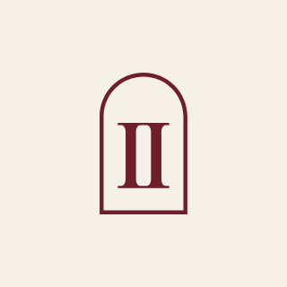
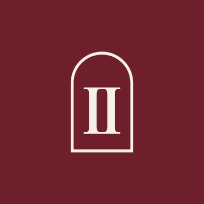

110px circular avatars (Instagram file, cropped to a circle in the browser)


← 40px, as in comments
Full lockups at 120px wide · monogram at 24px


studio · 160px

 studio · 160px
studio · 160px